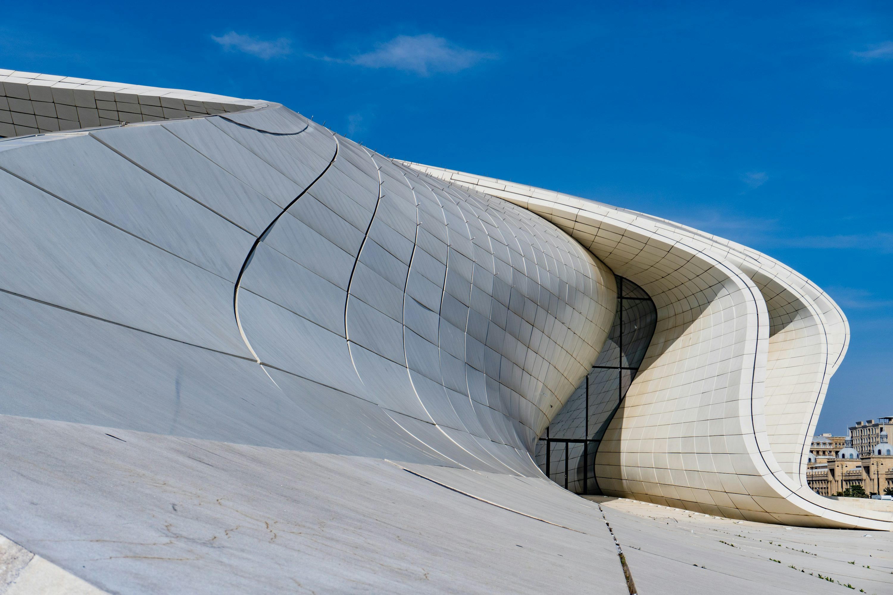

Skip to content
To Be a Rock and not to roll
— Led Zeppelin, Stairway To Heaven
Homepage
Seminars
Algebraic Topology
→
Riemannian Geometry
→
Lecture Materials
Complex Analysis
→
Basic Topology
→
Classical Differential Geometry
→
More Information

Classical Differential Geometry
Information & Introduction
History & Progress